Администрация | ||
Длинный дом ярла | ||
| Сиддгейр | Легат Скулнар | |
| 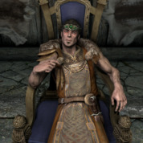 | 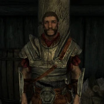 | |
| Ненья | Райя | |
| 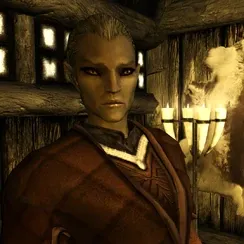 | ||
| 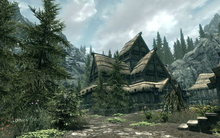 | 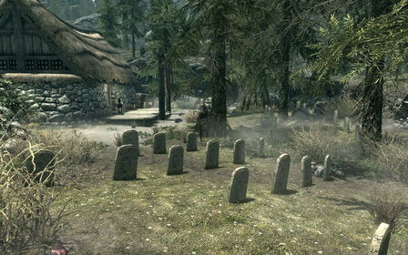 | .jpg) |
| Покои ярла | Кладбище города | Зал мёртвых в Фолкрите |
"Чтобы показать важность городского кладбища для Фолкрита, жители города выбрали для своих лавок и заведений названия, связанные с темой смерти и бренности"— Загрузочный экран
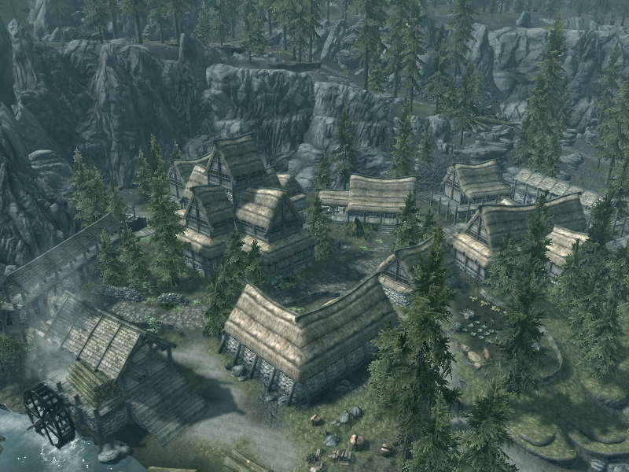
Город расположен на юге Скайрима, во владении Фолкрит, рядом с границами Сиродила и Хаммерфелла. На момент прибытия главного героя город находится под контролем Империи. Основой экономики города являются пиломатериалы, получаемые из близлежащих лесов. Главной достопримечательностью города является знаменитое кладбище героев, являющееся последним пристанищем многих поколений людей со всего Скайрима. Лавка алхимика, ферма Матьеса и таверна города имеют в своих названиях печальный отклик соседствующей с городом смерти.
У Фолкрита очень богатая история, в том числе и военная, о чём свидетельствует не только городское кладбище, но и летописи. Сейчас в это трудно поверить, но раньше город был столицей могущественного королевства, стоящего у истоков Третьей Империи. Период наивысшего расцвета и расширения фолкритского государства приходится на конец Второй эры, когда завоевания тогдашнего короля Кулекайна простёрлись от Старого Хролдана в Пределе, до Санкр Тора в Коловии, чему способствовал легендарный генерал Хьялти Раннебородый, который захватил Имперский город в 2Э 852 году, создал Третью Сиродильскую Империю и основал династию Септимов, короновавшись как император Тайбер Септим. Но славные дни Фолкрита остались в далёком прошлом. К концу второго столетия Четвёртой эры город больше похож на большую деревню, от городской стены осталась лишь пара бастионов, а на обломках некогда могущественного королевства, в пограничных крепостях и опорных пунктах поселились разбойники, вампиры и нежить. Очевидно, что город пришёл в запустение после Кризиса Обливиона и Великой войны, поскольку Хаммерфелл стал независимым государством и дорога на Элинир оказалась закрытой, а новым центром местного транзита и торговли стал Хелген, который, в свою очередь, был уничтожен в 4Э 201 году в результате нападения дракона Алдуина. Теперь у Фолкрита нет средств и сил чтобы патрулировать дороги собственного владения, не говоря уже об удержании ближайших сторожек.
Администрация | ||
Длинный дом ярла | ||
| Сиддгейр | Легат Скулнар | |
| 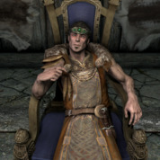 | 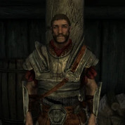 | |
| Ненья | Райя | |
| 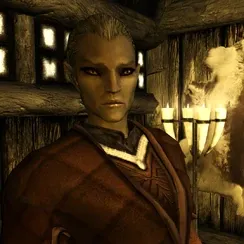 | ||
| 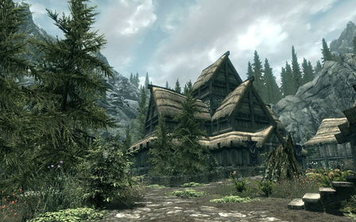 | 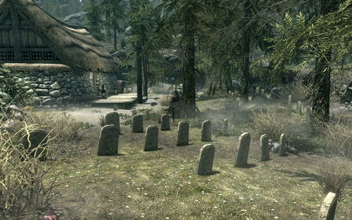 | |
| Покои ярла | Кладбище города | Зал мёртвых в Фолкрите |